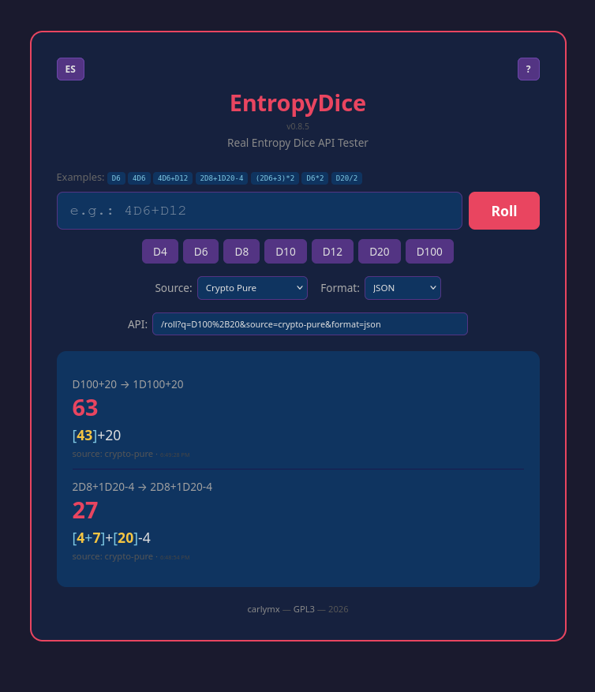

Documentación de EntropyDice

EntropyDice es una API REST que genera números aleatorios
criptográficamente seguros para dados de juegos de rol. Usa el CSPRNG del
kernel de Linux (/dev/urandom) para proporcionar entropía real
de hardware, garantizando resultados justos y sin sesgo.
Soporta todos los dados estándar de rol: D4, D6, D8, D10, D12, D20, D100
(percentil), así como expresiones compuestas como 4D6+D12 y
modificadores como 2D8+1D20-4.
Inicio Rápido
Instala y ejecuta el servidor localmente:
git clone <repo>
cd EntropyDice
npm install
npm startHaz tu primera tirada:
curl "http://localhost:3000/roll?q=D20"
{"ok":true,"expression":"D20","groups":[{"dice":"D20","count":1,"rolls":[15],"subtotal":15}],"modifier":0,"detail":"[15]","total":15, ...}Endpoints
Información de la API y health check. Devuelve versión, fuentes disponibles y documentación de endpoints.
Lanzar dados. Este es el endpoint principal. Todos los parámetros excepto q son opcionales.
Expresiones de Dados
El parámetro q acepta expresiones según esta gramática:
expr → factor (('+' | '-') factor)*
termino → factor (('*' | '/') factor)*
factor → dado | número | '(' expr ')'
dado → ('D' | 'd') número (equivale a 1Dn)
| número ('D' | 'd') número
número → \d+Los operadores siguen la precedencia matemática estándar: * y / tienen mayor precedencia que + y -. Los paréntesis pueden usarse para alterar la precedencia.
Ejemplos Básicos
| Expresión | Significado | Ejemplo Respuesta (text) |
|---|---|---|
D6 | 1 dado de 6 caras | [4] = 4 |
D20 | 1 dado de 20 caras | [17] = 17 |
D100 | 1 dado percentil | [73] = 73 |
4D6 | 4 dados de 6 caras | [4+2+6+1] = 13 |
3D8 | 3 dados de 8 caras | [5+3+7] = 15 |
Expresiones Compuestas
| Expresión | Significado | Ejemplo Respuesta (text) |
|---|---|---|
4D6+D12 | 4d6 + 1d12 | [4+2+6+1]+[9] = 22 |
2D8+1D20 | 2d8 + 1d20 | [5+3]+[17] = 25 |
D4+2D10 | 1d4 + 2d10 | [3]+[7+2] = 12 |
Con Modificadores
| Expresión | Significado | Ejemplo Respuesta (text) |
|---|---|---|
2D8+1D20-4 | 2d8 + 1d20 - 4 | [8+8]+[20]-4 = 32 |
D6+3 | 1d6 + 3 | [4]+3 = 7 |
3D6-2 | 3d6 - 2 | [4+2+6]-2 = 10 |
D6-D4 | 1d6 - 1d4 | [5]-[2] = 3 |
Expresiones Complejas
Se soporta multiplicación (*), división (/) y paréntesis:
| Expresión | Significado | Ejemplo Respuesta (text) |
|---|---|---|
D6*2 | 1d6 × 2 | [4]*2 = 8 |
D6*D4 | 1d6 × 1d4 | [5]*[3] = 15 |
D20/2 | 1d20 ÷ 2 | [17]/2 = 8.5 |
(2D6+3)*2 | (2d6 + 3) × 2 | ([4+2]+3)*2 = 18 |
2*(D4+D6) | 2 × (1d4 + 1d6) | 2*([3]+[4]) = 14 |
(D10+3)/2 | (1d10 + 3) ÷ 2 | ([7]+3)/2 = 5 |
La división devuelve resultados con hasta 2 decimales. La división por cero devuelve un error 400.
+→%2B*→%2A/→%2F
4D6%2BD12, %282D6%2B3%29*2
Parámetros
| Parámetro | Obligatorio | Default | Valores | Descripción |
|---|---|---|---|---|
q |
Sí | — | Expresión de dados | La expresión de dados a lanzar (ej: D6, 4D6+D12) |
source |
No | crypto-pure |
crypto-pure, crypto-xoshiro-ng |
Fuente de aleatoriedad |
format |
No | json |
json, text, html, raw |
Formato de respuesta |
Formatos de Respuesta
JSON (default)
Respuesta estructurada con todos los detalles de la tirada. Para uso programático.
GET /roll?q=2D8+1D20-4
{
"ok": true,
"expression": "2D8+1D20-4",
"normalized": "2D8+1D20-4",
"source": "crypto-pure",
"groups": [
{ "dice": "D8", "count": 2, "rolls": [8, 8], "subtotal": 16 },
{ "dice": "D20", "count": 1, "rolls": [20], "subtotal": 20 }
],
"modifier": -4,
"detail": "[8+8]+[20]-4",
"total": 32,
"timestamp": "2026-07-04T12:00:00.000Z"
}Texto
Texto plano legible para humanos. Para terminal / curl.
GET /roll?q=2D8+1D20-4&format=text
[8+8]+[20]-4 = 32HTML
Página HTML estilizada. Para usar directamente en el navegador o incrustar en iframes.
GET /roll?q=2D8+1D20-4&format=html
<!-- Devuelve una página HTML completa con tema oscuro -->Al abrir la URL directamente en un navegador se muestra una tarjeta con el resultado, los dados individuales y el total.
Raw
Solo el número. Ideal para scripts que solo necesitan el valor del resultado.
GET /roll?q=2D8+1D20-4&format=raw
32Fuentes de Aleatoriedad
crypto-pure (default)
Usa crypto.randomInt() de Node.js, que llama al CSPRNG del
kernel (getrandom() → /dev/urandom).
Esto proporciona entropía real de hardware recolectada de:
- Jitter del ciclo de la CPU
- Variaciones de temporización de I/O de disco
- Temporización de interrupciones de red
- Generadores de números aleatorios hardware (si están disponibles)
Cada llamada es sin estado e independiente. Sin semilla, sin estado, sin secuencia — cada número es entropía fresca. Usa rejection sampling internamente para eliminar el sesgo de módulo.
crypto-xoshiro-ng
Fuente híbrida que combina la velocidad de un PRNG con la seguridad de la entropía criptográfica:
- Semilla: 128 bits de entropía real vía
crypto.randomBytes(16) - Generación: Algoritmo Xoshiro128++ (~200M números/segundo)
- Inyección de ruido: Cada salida se combina con XOR contra un timestamp de microsegundos
- Auto-reseed: Nueva semilla de 128 bits cada hora (configurable)
Ideal para escenarios de alto rendimiento donde se necesita velocidad y comportamiento no determinista.
Casos de Uso
Al ser una API REST estándar, EntropyDice puede ser llamada desde cualquier lenguaje o plataforma que soporte peticiones HTTP. A continuación ejemplos de integración comunes.
Desde el Navegador (JavaScript)
const respuesta = await fetch('https://entropydice.onrender.com/roll?q=4D6+D12');
const datos = await respuesta.json();
console.log(`Total: ${datos.total}`); // → Total: 22
console.log(`Detalle: ${datos.detail}`); // → Detalle: [4+2+6+1]+[9]Desde curl (terminal)
# Respuesta JSON
curl "https://entropydice.onrender.com/roll?q=4D6%2BD12"
# Respuesta texto (legible)
curl "https://entropydice.onrender.com/roll?q=4D6%2BD12&format=text"
# → [4+2+6+1]+[9] = 22
# Respuesta raw (solo el número)
curl "https://entropydice.onrender.com/roll?q=4D6&format=raw"
# → 13
# Usar en un script de shell:
RESULTADO=$(curl -s "https://entropydice.onrender.com/roll?q=D20&format=raw")
echo "Has sacado: $RESULTADO"Desde Python
import requests
# Lanzar 4d6 + d12
r = requests.get("https://entropydice.onrender.com/roll", params={
"q": "4D6+D12"
})
datos = r.json()
print(f"Detalle: {datos['detail']}")
print(f"Total: {datos['total']}")
# Con modificador y fuente personalizada
r = requests.get("https://entropydice.onrender.com/roll", params={
"q": "2D8+1D20-4",
"source": "crypto-xoshiro-ng",
"format": "raw"
})
print(f"Resultado: {r.text}") # → 32Desde Android (Kotlin)
// Usando OkHttp
import okhttp3.OkHttpClient
import okhttp3.Request
import org.json.JSONObject
val client = OkHttpClient()
val request = Request.Builder()
.url("https://entropydice.onrender.com/roll?q=4D6")
.build()
client.newCall(request).execute().use { response ->
val json = JSONObject(response.body!!.string())
val total = json.getInt("total")
val detail = json.getString("detail")
textView.text = "🎲 $detail = $total"
}
// Usando Retrofit
interface DiceApi {
@GET("roll")
suspend fun lanzarDados(
@Query("q") expression: String,
@Query("format") format: String = "json"
): ResponseBody
}Desde Telegram Bot (Python)
import requests
from telegram import Update
from telegram.ext import Application, CommandHandler
API_URL = "https://entropydice.onrender.com/roll"
async def comando_roll(update: Update, context):
expression = context.args[0] if context.args else "D20"
r = requests.get(API_URL, params={
"q": expression,
"format": "text"
})
await update.message.reply_text(
f"🎲 *{expression}*\n`{r.text}`",
parse_mode="Markdown"
)
app = Application.builder().token("TU_TOKEN").build()
app.add_handler(CommandHandler("roll", comando_roll))
app.run_polling()Desde Discord Bot (discord.js)
const { Client, GatewayIntentBits } = require('discord.js');
client.on('messageCreate', async msg => {
if (!msg.content.startsWith('!roll')) return;
const args = msg.content.slice(6).trim();
const expr = args || 'D20';
const res = await fetch(
`https://entropydice.onrender.com/roll?q=${encodeURIComponent(expr)}&format=json`
);
const data = await res.json();
const embed = {
title: '🎲 Tirada de Dados',
description: `${data.detail} = **${data.total}**`,
color: 0xe94560,
footer: { text: `fuente: ${data.source}` }
};
msg.channel.send({ embeds: [embed] });
});Manejo de Errores
Los errores devuelven una respuesta JSON con un campo error y el código de estado HTTP apropiado.
| Estado | Situación | Ejemplo |
|---|---|---|
| 400 | Falta o es inválido el parámetro q |
{"ok":false,"error":"Falta el parámetro \"q\"..."} |
| 400 | Caras de dado no válidas | {"ok":false,"error":"Caras no válidas: D7..."} |
| 400 | Sintaxis de expresión inválida | {"ok":false,"error":"Carácter inesperado: 'X'"} |
| 400 | División por cero | {"ok":false,"error":"División por cero"} |
| 400 | Nombre de fuente inválido | {"ok":false,"error":"Fuente no válida: 'foo'..."} |
| 429 | Límite de peticiones excedido (ráfaga o diario) | {"ok":false,"error":"Demasiadas peticiones..."} |
| 403 | IP bloqueada permanentemente | {"ok":false,"error":"IP bloqueada permanentemente..."} |
| 500 | Error interno del servidor | {"ok":false,"error":"..."} |
Límites de Peticiones
El endpoint /roll está protegido por un sistema de rate
limiting en dos capas para garantizar un uso justo y prevenir abusos.
Límite de Ráfaga
Máximo 120 peticiones por minuto por dirección IP.
Superarlo devuelve una respuesta 429 Too Many Requests.
Las cabeceras estándar X-RateLimit-* se incluyen en cada
respuesta.
Límite Diario
Máximo 7200 peticiones por día por dirección IP.
Cada respuesta incluye las cabeceras X-RateLimit-Daily-Limit
y X-RateLimit-Daily-Remaining.
Sistema de Baneo
Cada vez que una IP excede el límite diario, acumula un
strike. Tras 3 strikes consecutivos,
la IP recibe un baneo permanente y obtiene
403 Forbidden en todas las peticiones futuras.
Los strikes expiran tras 24 horas de buen comportamiento (sin violaciones del límite diario). Los datos se persisten en un archivo JSON y sobreviven a reinicios del servidor.
Variables de Entorno
| Variable | Default | Descripción |
|---|---|---|
PORT | 3000 | Puerto del servidor HTTP |
DEFAULT_SOURCE | crypto-pure | Fuente de aleatoriedad por defecto cuando se omite el parámetro source |
RESEED_INTERVAL_MS | 3600000 | Intervalo de reseed para crypto-xoshiro-ng en milisegundos (1 hora) |
RATE_LIMIT_WINDOW_MS | 60000 | Ventana de tiempo del límite de ráfaga en ms (1 minuto) |
RATE_LIMIT_MAX | 120 | Máximo de peticiones por IP dentro de la ventana de ráfaga |
RATE_LIMIT_DAILY | 7200 | Máximo de peticiones por IP y día |
BAN_MAX_STRIKES | 3 | Violaciones diarias consecutivas antes del baneo permanente |
BANNED_IPS | | Lista de IPs baneadas manualmente (separadas por comas) |
Despliegue en Render
- Crea un Web Service en render.com
- Conecta tu repositorio de GitHub/GitLab
- Configura:
- Build Command:
npm install - Start Command:
node server.js - Plan: Free
- Build Command:
- Añade variables de entorno opcionales (ver arriba)
- Despliega. Tu API estará disponible en
https://tu-app.onrender.com
El plan gratuito se duerme tras 15 minutos de inactividad. La primera petición tras el sueño tarda ~5-10 segundos en arrancar (cold start).
Futuras Funcionalidades
Funcionalidades bajo consideración para versiones futuras:
max(a, b)ymin(a, b)— mayor/menor de dos expresiones- Operador
d(descartar) — ej:4D6d1para descartar el dado más bajo - Operador
k(conservar) — ej:4D6k3para conservar los 3 dados más altos - Notación de ventaja/desventaja:
ADV(D20),DIS(D20)
Parámetro name
En partidas de rol juegan varios personajes/jugadores y muchos NPCs.
Un parámetro name (o user) permitiría indicar
un identificador de jugador o personaje en cada tirada — ej.
Player-1, Esqueleto-3, murciélago.
La API devolvería este mismo campo en la respuesta, facilitando a
programas que hacen muchas tiradas discernir a quién pertenece cada
resultado.
Dados de colores / grupos paralelos
Hay juegos que lanzan dados de diferentes colores donde cada grupo de color forma operaciones independientes y no una única expresión conjunta. Por ejemplo, lanzar 2 dados verdes y 3 dados blancos a la vez: cada grupo de color se evalúa por separado. Esta funcionalidad requiere un diseño cuidadoso para expresar los grupos de color en la cadena de consulta manteniendo una sintaxis intuitiva.
Modo de solo dados (sin cálculo)
Un modo de respuesta que muestre únicamente los resultados individuales
de los dados sin realizar ninguna operación aritmética. Por ejemplo,
3D6 devolvería [6][6][6] y
2D8+4 devolvería [8][8][4] (se ignoran los
operadores y modificadores). Es útil para depuración, verificación manual
o cuando el cliente quiere aplicar su propia lógica matemática. Si la
expresión no contiene dados — ej. 2+4+6 — los valores se
devuelven como resultados literales [2][4][6].
Acerca de
EntropyDice v0.8.7
EntropyDice es una API REST que genera números aleatorios criptográficamente seguros para dados de juegos de rol utilizando el CSPRNG del kernel. Está diseñada para ser simple, ligera y utilizable desde cualquier plataforma que soporte peticiones HTTP.
Esta aplicación ha sido desarrollada por carlymx.
GitHub: https://github.com/carlymx
Repositorio del proyecto: https://github.com/carlymx/entropydice
Propiedad intelectual
El código fuente de esta aplicación se distribuye bajo los términos de la GNU General Public License v3.0.
https://www.gnu.org/licenses/gpl-3.0.html
Aviso legal
ESTE SOFTWARE SE PROPORCIONA "TAL CUAL", SIN GARANTÍA DE NINGÚN TIPO, EXPRESA O IMPLÍCITA, INCLUYENDO PERO NO LIMITADO A GARANTÍAS DE COMERCIALIZACIÓN, IDONEIDAD PARA UN PROPÓSITO PARTICULAR Y NO INFRACCIÓN. EN NINGÚN CASO LOS AUTORES O TITULARES DEL COPYRIGHT SERÁN RESPONSABLES POR CUALQUIER RECLAMO, DAÑO U OTRA RESPONSABILIDAD, YA SEA EN UNA ACCIÓN CONTRACTUAL, EXTRACONTRACTUAL O DE OTRO TIPO, QUE SURJA DE O EN CONEXIÓN CON EL SOFTWARE O EL USO U OTRO TIPO DE ACCIONES EN EL SOFTWARE.
EntropyDice es un proyecto sin ánimo de lucro, creado con fines educativos y de entretenimiento. No se cobra por su uso ni se recaudan datos personales de los usuarios.